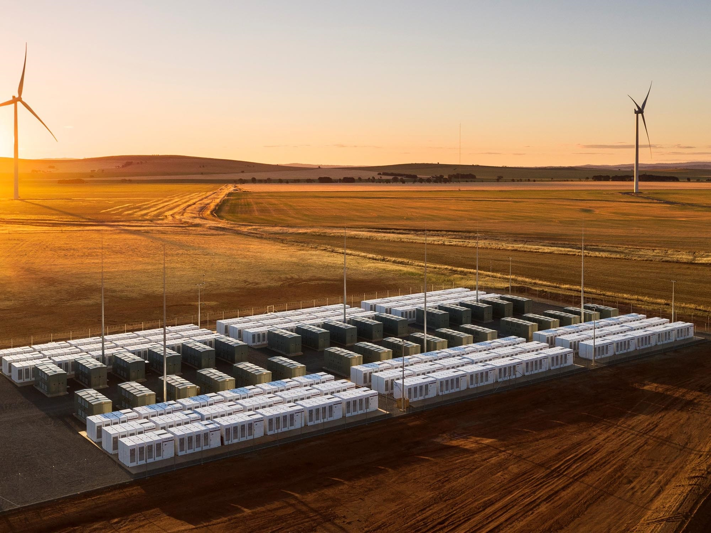
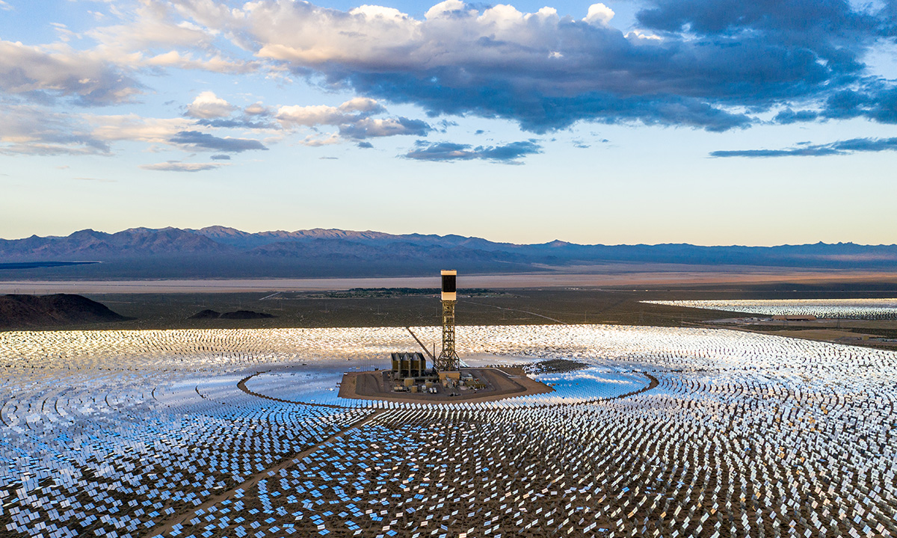
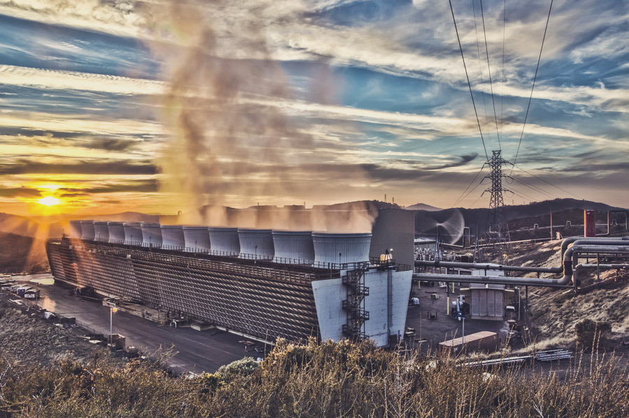

Hornsdale Power Reserve (Australia)
The Hornsdale Power Reserve is the world's largest battery storage system, located in South Australia. It helps stabilize the electricity grid, ensuring reliability even during peak demand periods. This project demonstrates how renewable energy can be integrated into existing infrastructure to improve grid stability and reduce reliance on fossil fuels.
Learn more: Hornsdale Power Reserve Website
Ivanpah Solar Power Facility (United States)
The Ivanpah Solar Power Facility is the world's largest solar thermal power plant, located in the Mojave Desert in California. It uses mirrors to concentrate sunlight and generate electricity, providing clean energy to 140,000 homes. This project demonstrates the potential of solar power in sunny regions and its ability to contribute significantly to energy needs.
Learn more: NREL Ivanpah Solar Power Facility
Geysir Geothermal Power Plant (Iceland)
The Geysir Geothermal Power Plant is one of Iceland's largest geothermal power plants. It harnesses the Earth's heat to generate electricity and provide heating for homes and businesses. This case study highlights the potential of geothermal energy in areas with geothermal activity and its ability to provide both electricity and heat in a sustainable manner.
Learn more: Landsvirkjun Geysir Geothermal Power Plant